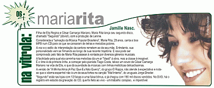

Filha de Elis Regina e César Camargo Mariano, Maria Rita lança seu segundo disco, chamado "Segundo" (óbvio!), com a produção de Lenine.
Considerada a "salvação da Música Popular Brasileira", Maria Rita, 28 anos, canta a boa MPB num CD para os que se cansaram de letras e melodias pobres.
A voz e o estilo de interpretação da cantora remetem ao de seu mãe. Entretanto, sua personalidade se firma.
E isso pode ser comprovado pelo fato de Maria Rita passear à vontade por diversos gêneros musicais.
 A facilidade pela qual ela caminha nas melodias dá um ar "blasê" à obra, mas a classe é inegável.
A facilidade pela qual ela caminha nas melodias dá um ar "blasê" à obra, mas a classe é inegável.
E o "time" é de primeira linha, a começar pelo pianista Tiago Costa, talvez um "cover" de César Camargo Mariano na vida de Elis, e que dá suavidade às músicas com linhas melódicas delicadíssimas.
A versão de "A Minha Alma (A Paz Que Eu Não Quero)", do grupo O Rappa, não atende à expectativa e nota-se que o "castelhano" não é um de seus fortes na canção "Mal intento", do uruguaio Jorge Drexler.
"Segundo" está nas lojas com 12 faixas e uma faixa bônus, e já chegou com 180 mil discos vendidos. No DVD, há o registro em estúdio da gravação do CD, que foi feito ao vivo - um trabalho corajoso, delicado e imperdível.